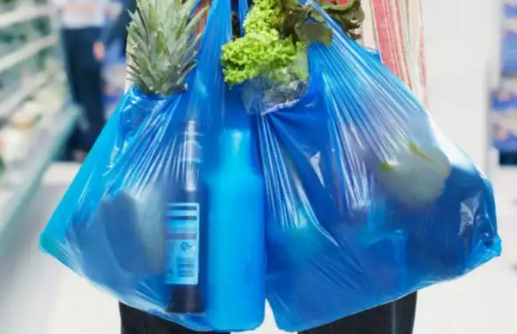
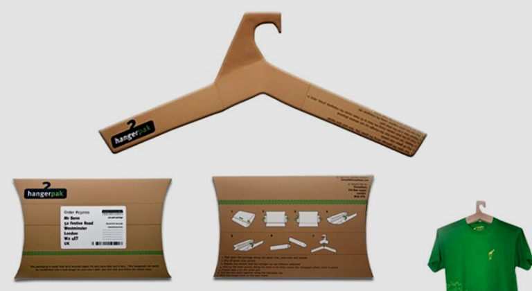

Beneficio 3
Los bioplásticos tienen también un interés socioeconómico,
ya que con frecuencia proyectan un impacto positivo en el consumidor,
cada vez más concienciado con las cuestiones medioambientales.
Sin caer en el concepto de greenwashing, los bioplásticos pueden responder en parte a estas expectativas y, al mismo tiempo.
Poder utilizar productos más respetuosos con el medio ambiente es un aspecto muy demandado por la mayoría de los consumidores.
- Responder a una demanda de los consumidores.
- Imagen positiva de la empresa
- Producto más atractivo
